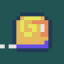

Wskocz z baranem na magiczny dywan i leć jak najdalej. Wymijaj przeszkody, lub skorzystaj z ich mechaniki.
Każdy zebrany burak w grze to 1 cent darowizny na dla fundacji “nazwa”.
Pomysłodawca, twórca gry “Whally Ram”. Amator silnika godot. Pierwszy sponsor darowizny na fundację “nazwa”.